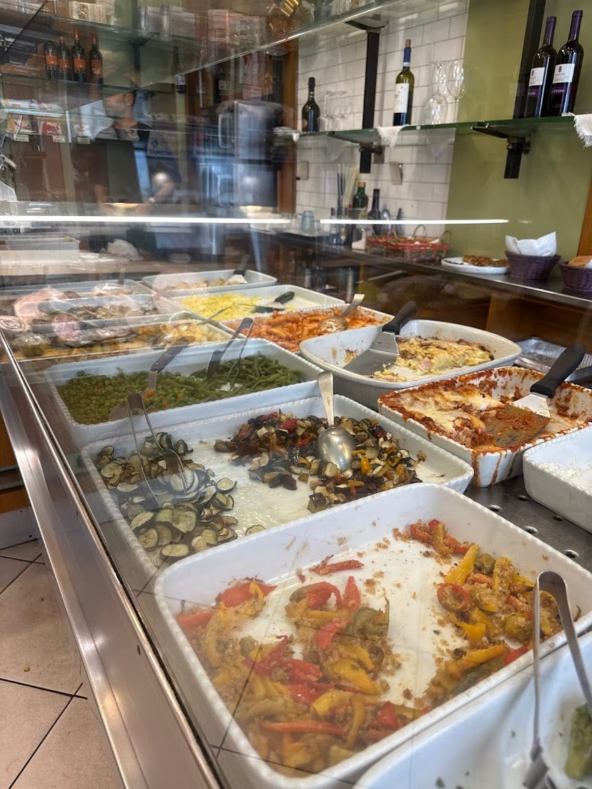

Elena & Alessandro · Corso Italia
Dal 1968, come a casa
Elena ha aperto la bottega nel 1968 e da allora si alza ogni mattina alle sei per cucinare i piatti pronti che riportano i clienti anno dopo anno. Oggi al banco c'è anche il figlio Alessandro, che accoglie tutti con un sorriso.
Come nella Milano di una volta.
Ingredienti di stagione, ricette semplici e saporite, un po' come le faceva la mamma. E come una volta, ci si ferma per due chiacchiere, per staccare dalla corsa della città e ascoltare le storie del quartiere.
Dal 1968
Elena in cucina
Alessandro al banco
Menù ogni giorno diverso
